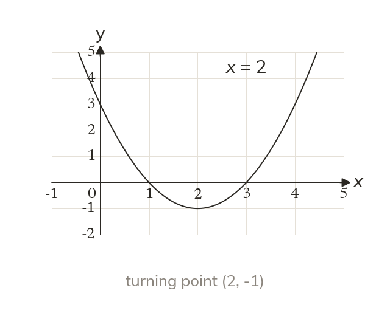
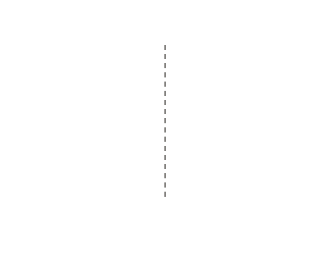

The line of symmetry
A parabola is symmetrical about a vertical line through its turning point. For y = x² - 4x + 3, that line is x = 2.
A parabola is symmetrical about a vertical line through its turning point. For y = x² - 4x + 3, the line is x = 2 and the turning point is (2, -1).